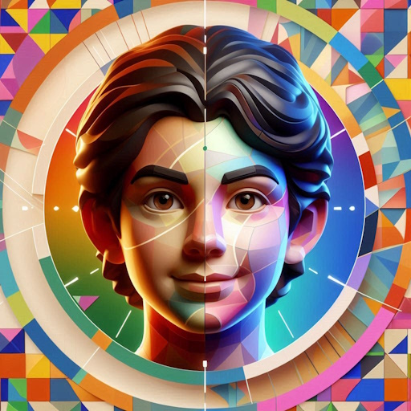

Firmware · Hardware Engineer
在 工業自動化 與 嵌入式 AI 之間，把電路與程式接起來
從暫存器設定到人機介面，習慣把整條路徑走完 —— 因為問題通常就藏在交界處。
| Firmware | C / C++、RTOS、暫存器層級驅動開發 |
|---|---|
| Desktop | C# 、影像處理與設備端工具程式 |
| Scripting | Python、資料處理、模型訓練與自動化流程 |
| Mobile | Android 應用程式開發（個人專案） |
| Domain | 工業自動化、嵌入式 AI、電腦視覺、運動控制 |
在資源受限的微控制器上完成模型推論，涵蓋開機架構、記憶體規劃與相機模組整合。
影像擷取、瑕疵判定與參數調校介面，將檢測流程整合進產線作業。
機構運動軌跡規劃與設備通訊整合，搭配操作端的控制介面。
多顆驅動 IC 串接的 SPI 陣列控制，處理像素映射與動畫更新流程。